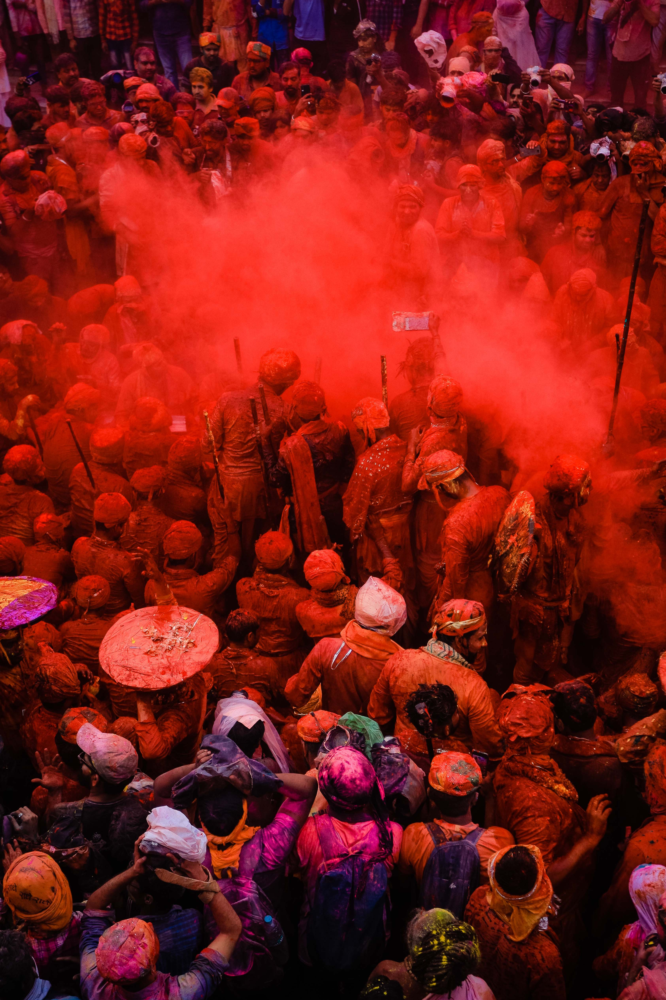
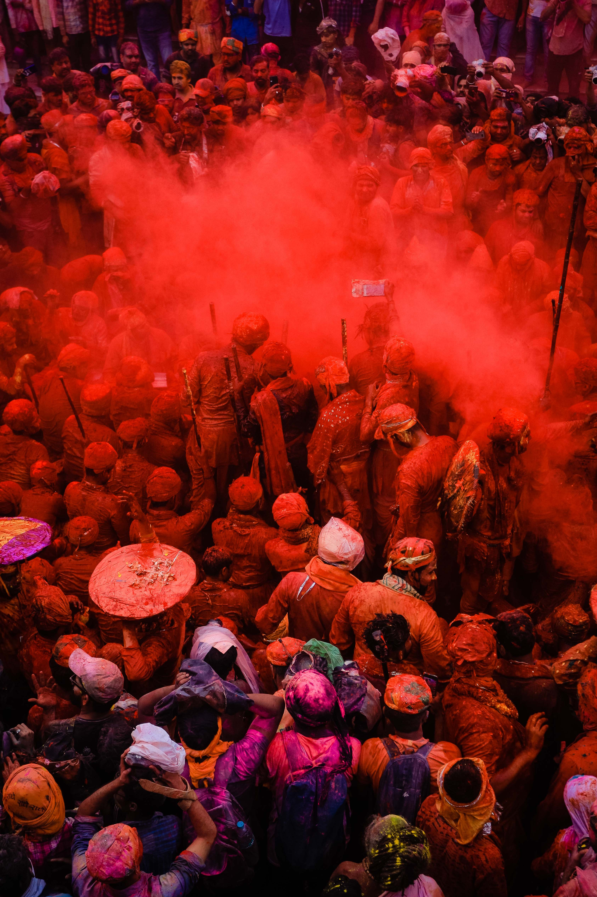

About Us
Contact us
Climate
üôè Welcome in Uttar Pradesh Tourism üôè
About Uttar Pradesh:
Uttar Pradesh is a state located in northern India.
It is the most populous state in India and is known for its rich history, culture,
and political significance.With over 241 million inhabitants, it is the most populated state in India
as well as the most populous country subdivision in the world.The state is divided into 18 divisions and 75 districts.
On 9 November 2000, a new state, Uttaranchal (now Uttarakhand), was created from Uttar Pradesh's western Himalayan hill region.
The two major rivers of the state, the Ganges and its tributary Yamuna,
meet at the Triveni Sangam in Prayagraj (formerly Allahabad), a Hindu pilgrimage site.
Images:
Varansi
 Mathura

Lucknow
Agra
Mathura

Lucknow
Agra
History of Uttar Pradesh:
- The capital city of Uttar Pradesh is Lucknow.
- Uttar Pradesh is the most populous state in India, with a diverse population comprising people from various ethnic, linguistic, and religious backgrounds.
- Uttar Pradesh has a rich historical and cultural heritage. It was the heartland of ancient Indian civilization and has been home to various powerful dynasties, including the Mauryas, Guptas, and Mughals. The city of Varanasi, located in Uttar Pradesh, is one of the oldest continuously inhabited cities in the world.
- Agriculture plays a significant role in Uttar Pradesh's economy, with crops like rice, wheat, sugarcane, and cotton being major contributors. The state also has a growing industrial sector, with manufacturing, trade, and services playing crucial roles.
- Uttar Pradesh is a politically significant state in India. It has a prominent role in national politics and often plays a decisive role in Indian general elections. The state has a bicameral legislature consisting of the Legislative Assembly (Vidhan Sabha) and the Legislative Council (Vidhan Parishad).
- Uttar Pradesh is a diverse state in terms of religion. It is home to numerous religious sites, including Varanasi (a sacred city for Hindus), Ayodhya (believed to be the birthplace of Lord Rama), and Allahabad (now known as Prayagraj, which hosts the Kumbh Mela).
- Uttar Pradesh is a popular tourist destination due to its historical and cultural significance. Tourists visit the state to explore its heritage sites, including the Taj Mahal in Agra, which is one of the Seven Wonders of the World.
- Uttar Pradesh is home to several prestigious educational institutions, including the Banaras Hindu University (BHU) and the Aligarh Muslim University (AMU).